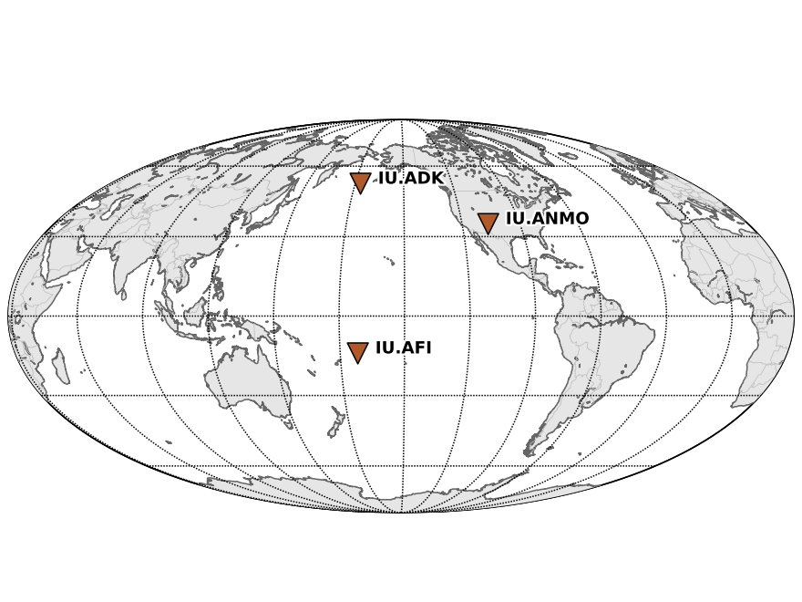
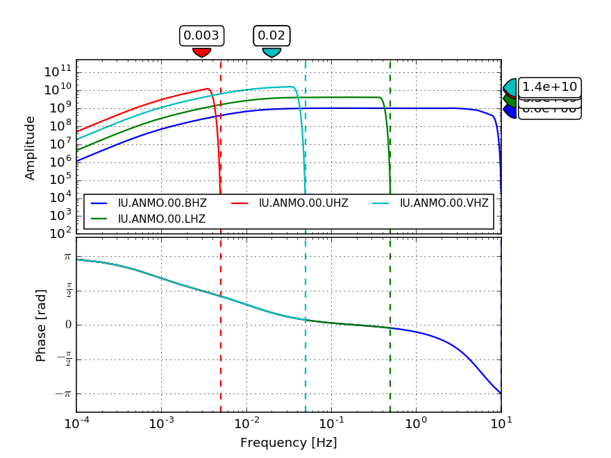

obspy.clients.fdsn.client.Client.get_stations¶
-
Client.get_stations(starttime=None, endtime=None, startbefore=None, startafter=None, endbefore=None, endafter=None, network=None, station=None, location=None, channel=None, minlatitude=None, maxlatitude=None, minlongitude=None, maxlongitude=None, latitude=None, longitude=None, minradius=None, maxradius=None, level=None, includerestricted=None, includeavailability=None, updatedafter=None, matchtimeseries=None, filename=None, format='xml', **kwargs)[source]¶ Query the station service of the FDSN client.
>>> client = Client("IRIS") >>> starttime = UTCDateTime("2001-01-01") >>> endtime = UTCDateTime("2001-01-02") >>> inventory = client.get_stations(network="IU", station="A*", ... starttime=starttime, ... endtime=endtime) >>> print(inventory) Inventory created at ... Created by: IRIS WEB SERVICE: fdsnws-station | version: ... ... Sending institution: IRIS-DMC (IRIS-DMC) Contains: Networks (1): IU Stations (3): IU.ADK (Adak, Aleutian Islands, Alaska) IU.AFI (Afiamalu, Samoa) IU.ANMO (Albuquerque, New Mexico, USA) Channels (0): >>> inventory.plot()
(Source code, png, hires.png)
The result is an
Inventoryobject which models a StationXML file.The
levelargument determines the amount of returned information.level="station"is useful for availability queries whereaslevel="response"returns the full response information for the requested channels.levelcan furthermore be set to"network"and"channel".>>> inventory = client.get_stations( ... starttime=starttime, endtime=endtime, ... network="IU", sta="ANMO", loc="00", channel="*Z", ... level="response") >>> print(inventory) Inventory created at ... Created by: IRIS WEB SERVICE: fdsnws-station | version: ... ... Sending institution: IRIS-DMC (IRIS-DMC) Contains: Networks (1): IU Stations (1): IU.ANMO (Albuquerque, New Mexico, USA) Channels (4): IU.ANMO.00.BHZ, IU.ANMO.00.LHZ, IU.ANMO.00.UHZ, IU.ANMO.00.VHZ >>> inventory[0].plot_response(min_freq=1E-4)
(Source code, png, hires.png)
Parameters: - starttime (
UTCDateTime) – Limit to metadata epochs starting on or after the specified start time. - endtime (
UTCDateTime) – Limit to metadata epochs ending on or before the specified end time. - startbefore (
UTCDateTime) – Limit to metadata epochs starting before specified time. - startafter (
UTCDateTime) – Limit to metadata epochs starting after specified time. - endbefore (
UTCDateTime) – Limit to metadata epochs ending before specified time. - endafter (
UTCDateTime) – Limit to metadata epochs ending after specified time. - network (str) – Select one or more network codes. Can be SEED network
codes or data center defined codes. Multiple codes are
comma-separated (e.g.
"IU,TA"). - station (str) – Select one or more SEED station codes. Multiple codes
are comma-separated (e.g.
"ANMO,PFO"). - location (str) – Select one or more SEED location identifiers. Multiple
identifiers are comma-separated (e.g.
"00,01"). As a special case“--“(two dashes) will be translated to a string of two space characters to match blank location IDs. - channel (str) – Select one or more SEED channel codes. Multiple codes
are comma-separated (e.g.
"BHZ,HHZ"). - minlatitude (float) – Limit to stations with a latitude larger than the specified minimum.
- maxlatitude (float) – Limit to stations with a latitude smaller than the specified maximum.
- minlongitude (float) – Limit to stations with a longitude larger than the specified minimum.
- maxlongitude (float) – Limit to stations with a longitude smaller than the specified maximum.
- latitude (float) – Specify the latitude to be used for a radius search.
- longitude (float) – Specify the longitude to the used for a radius search.
- minradius (float) – Limit results to stations within the specified minimum number of degrees from the geographic point defined by the latitude and longitude parameters.
- maxradius (float) – Limit results to stations within the specified maximum number of degrees from the geographic point defined by the latitude and longitude parameters.
- level (str) – Specify the level of detail for the results (“network”, “station”, “channel”, “response”), e.g. specify “response” to get full information including instrument response for each channel.
- includerestricted (bool) – Specify if results should include information for restricted stations.
- includeavailability (bool) – Specify if results should include information about time series data availability.
- updatedafter (
UTCDateTime) – Limit to metadata updated after specified date; updates are data center specific. - matchtimeseries (bool) – Only include data for which matching time series data is available.
- filename (str or file) – If given, the downloaded data will be saved there instead of being parse to an ObsPy object. Thus it will contain the raw data from the webservices.
- format (str) – The format in which to request station information.
"xml"(StationXML) or"text"(FDSN station test format). XML has more information but text is much faster.
Return type: Returns: Inventory with requested station information.
Any additional keyword arguments will be passed to the webservice as additional arguments. If you pass one of the default parameters and the webservice does not support it, a warning will be issued. Passing any non-default parameters that the webservice does not support will raise an error.
- starttime (
{kind=link}
{kind=link}
{kind=link}
{kind=link}